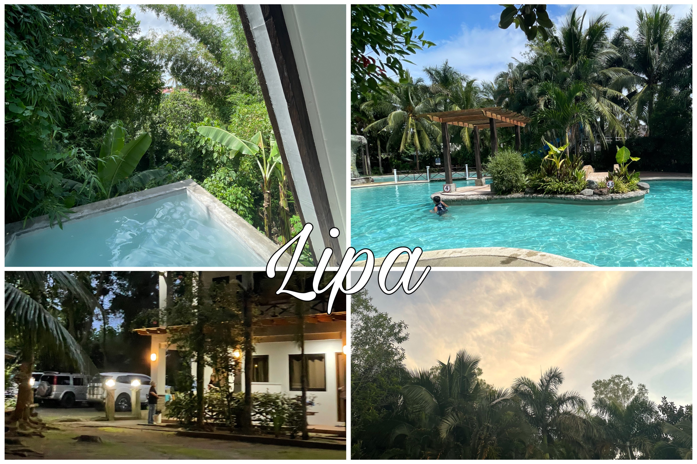
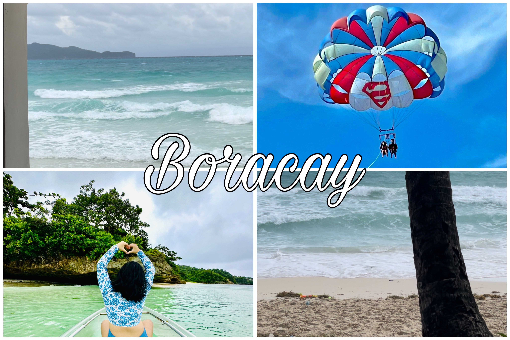
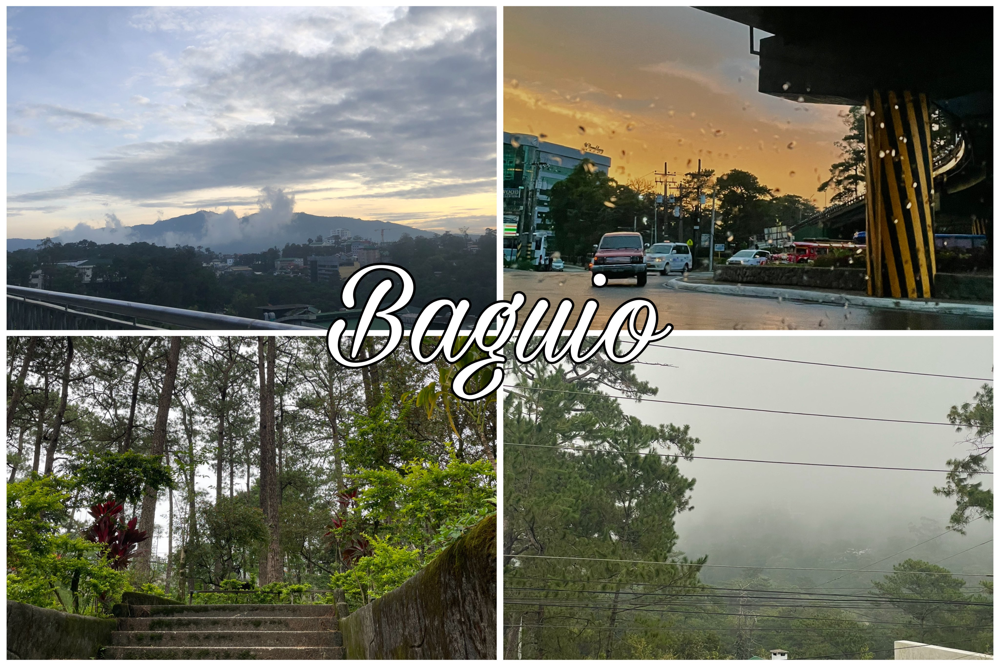

The Philippines is a Southerneast country wuth over 7,000+ islands. It's known for its food, the people but most importantly, the places. Now, here are the top 3 places in the Philippines that I have personally gone to and you wouldn't want to miss.
Lipa is known for its very delicious coffee. Personally, just by the scent of it, you can really tell it taste very amazing. It's also known for its very delicious food like Goto, Lomi, Bulalo, and etc. But what I find nice here is the vibe that is just chill and when it gets dark, you are surrounded by the trees with a nice weather that isn't too hot but not too cold. It gives a at home feeling especially if you are from this place.
Boracay is one of my favorite places to visit at least once in a while. It's known for its beautiful beaches with the pretty white sand and the clear blue water. Personally, me and my family has gone to Boracay at least 3 times over the last 3-4 years because of how pretty, claming and fun this place can be.
Without a doubt, Baguio is one of my personal favorite places. Why? I love the temperature here because it is cold. As we all know, the Philippines is a tropical country so it is really hot here. Visiting Baguio with your family is also a fun experience. You have probably heard of Burnhan Park, Camp John Hay, and Session Road. It's really a fun place to be over the vacation.
